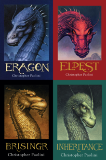
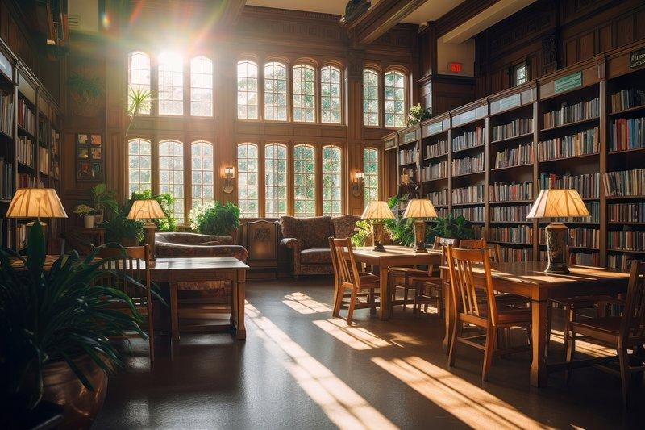
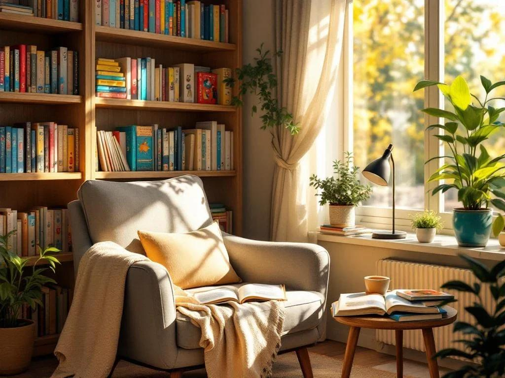

Bem-vindo à Biblioteca Mundo da Leitura!
A Biblioteca Mundo da Leitura é um espaço dedicado à cultura, ao conhecimento e à imaginação. Nosso objetivo é incentivar o hábito da leitura, proporcionando aos leitores acesso a diferentes histórias, conhecimentos e experiências.
Aqui você encontra livros de diversos gêneros, como romance, aventura, fantasia, suspense, literatura infantil e muito mais. Acreditamos que a leitura transforma vidas, amplia horizontes e abre portas para novas descobertas.
Livros em Destaque

Conheça a famosa saga Eragon, escrita por Christopher Paolini, uma emocionante história de fantasia, dragões e aventuras.
- Eragon - 2002
- Eldest - 2005
- Brisingr - 2008
- Herança - 2011
Venha conhecer nossa biblioteca!
Explore nosso espaço, descubra novos livros e permita-se viajar pelo universo da leitura.
Quem Somos

A Biblioteca Mundo da Leitura é um espaço criado para aproximar pessoas do universo dos livros. Somos apaixonados pelo conhecimento e acreditamos que a leitura é uma ferramenta essencial para o desenvolvimento pessoal e educacional.
Nosso propósito é oferecer um ambiente acolhedor, onde crianças, jovens e adultos possam descobrir novas histórias, desenvolver a criatividade e ampliar seus conhecimentos.
Nossa Missão
Incentivar a leitura, promover a educação e facilitar o acesso à informação e à cultura, contribuindo para a formação de cidadãos mais conscientes e criativos.
Nossa Visão
Ser reconhecida como um espaço de referência no incentivo à leitura, ao aprendizado e à transformação por meio do conhecimento.
Nossos Valores
- Amor pela leitura e pelo conhecimento.
- Respeito à diversidade.
- Incentivo à educação.
- Acesso à cultura e à informação.
- Criatividade e imaginação.
Nosso Espaço

Mais do que um lugar cheio de livros, somos um ambiente de descobertas, aprendizado e inspiração. Cada livro representa uma nova oportunidade de conhecer o mundo!